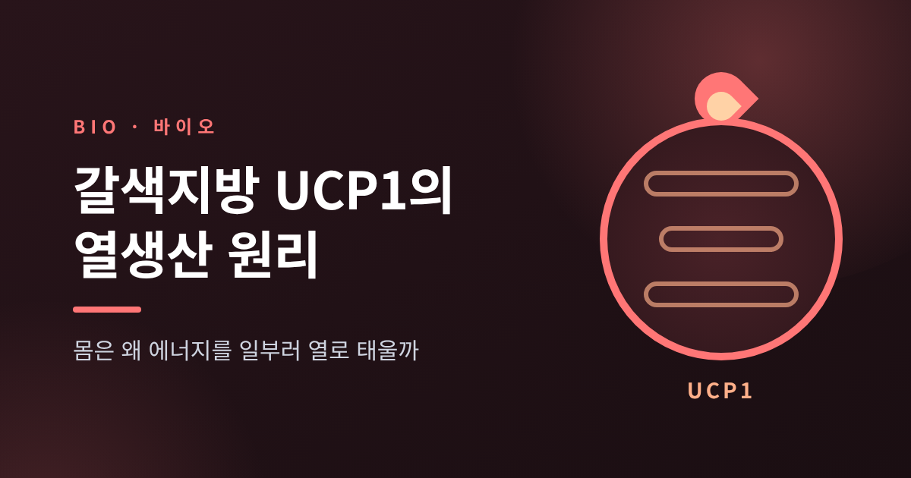
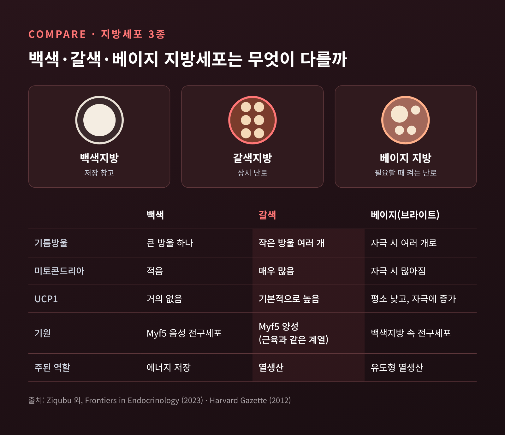
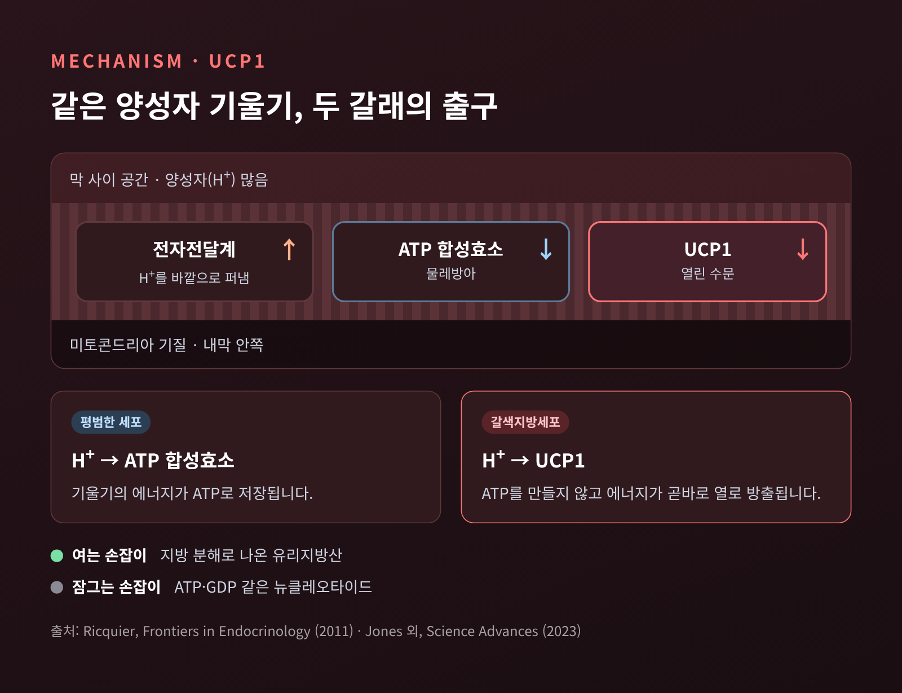
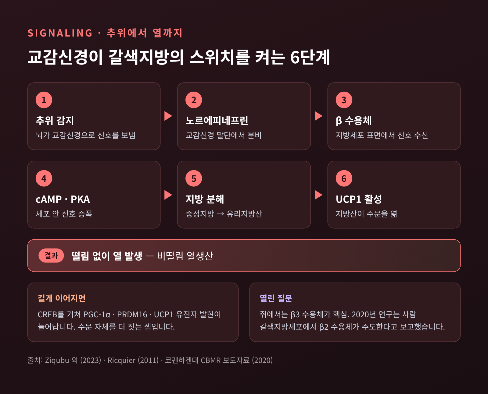
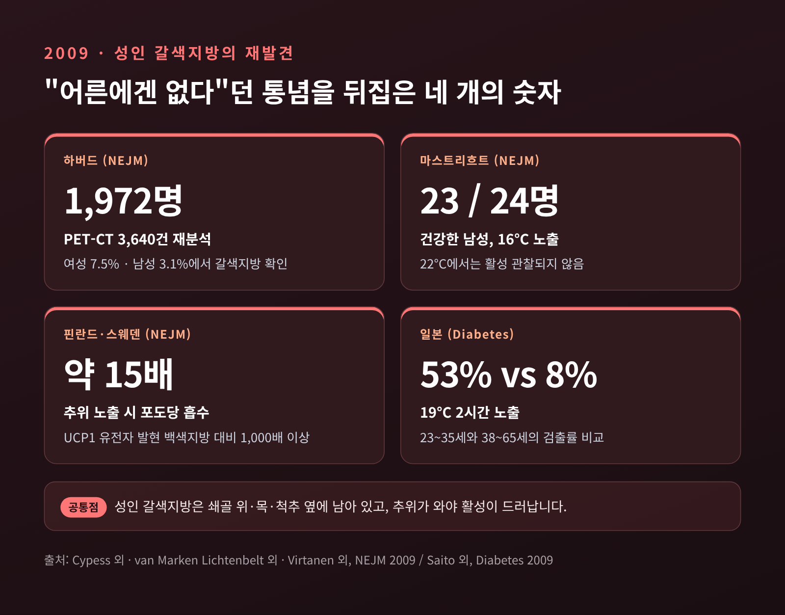
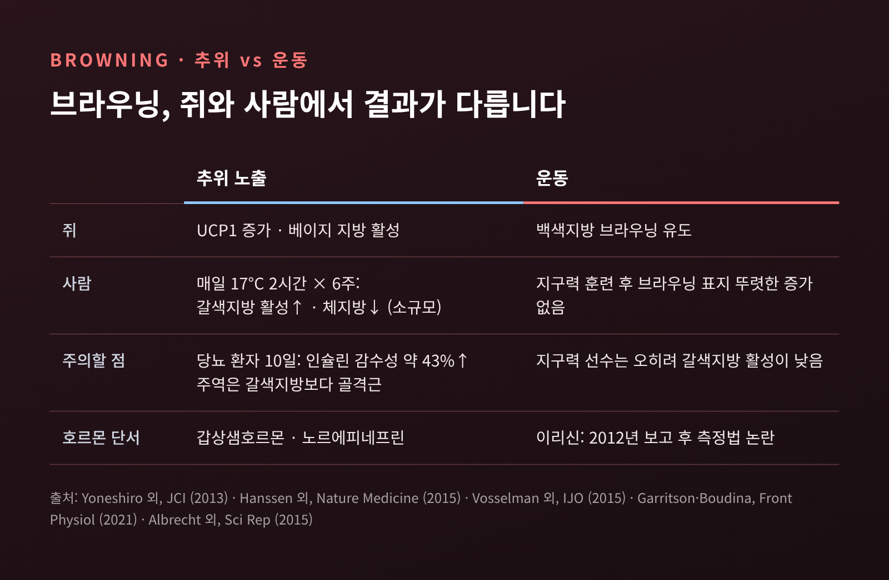
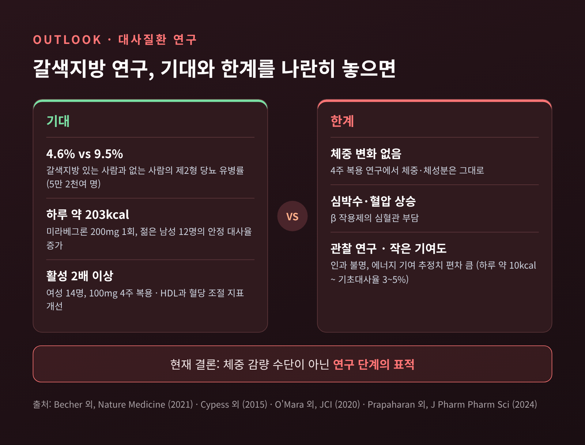

갈색지방 UCP1의 열생산 원리 — 몸은 왜 에너지를 일부러 열로 태울까

이번 글에서는 갈색지방이 떨지 않고도 열을 만드는 원리를 정리해 보겠습니다. 중심에는 UCP1이라는 단백질 하나가 있습니다. 체온 조절 전반이나 지방이 연소되는 경로는 이전 글에서 다뤘으니, 여기서는 이 단백질과 갈색지방에만 집중합니다.
먼저 세 줄로 요약하면 이렇습니다.
- 갈색지방의 UCP1은 미토콘드리아에 쌓인 양성자를 ATP 합성 없이 흘려보내, 그 에너지를 곧바로 열로 바꿉니다.
- 성인에게는 갈색지방이 거의 없다고 여겨졌지만, 2009년 PET-CT 연구 세 편이 성인에게도 활성 갈색지방이 있음을 보여 주었습니다.
- 대사질환과의 연관성은 흥미롭지만, 체중 감량 수단으로 쓰기에는 아직 연구 단계입니다.
■ 지방은 세 가지 색을 띱니다
지방이라고 하면 보통 뱃살의 하얀 지방을 떠올립니다. 이것이 백색지방입니다. 세포 안에 커다란 기름방울 하나가 들어 있고, 미토콘드리아는 적습니다. 역할은 남는 에너지를 저장하는 창고입니다.
갈색지방은 정반대에 가깝습니다. 작은 기름방울이 여러 개 흩어져 있고, 미토콘드리아가 빽빽합니다. 철을 품은 미토콘드리아가 워낙 많아 조직이 갈색으로 보입니다. 혈관도 풍부하게 얽혀 있습니다.
세 번째가 베이지 지방입니다. '브라이트(brite, brown-in-white)'라고도 부릅니다. 백색지방 사이에 섞여 있다가, 추위 같은 자극을 받으면 갈색지방처럼 변합니다. 2012년 하버드 다나파버 연구진이 성인에게서 이 세포를 분리해 학술지 Cell에 보고했습니다. 갈색지방은 근육세포와 같은 계열의 전구세포에서 생기는 반면, 베이지 지방은 백색지방 안의 별도 전구세포에서 생깁니다. 평소에는 UCP1이 적다가, 자극을 받으면 이를 크게 늘려 갈색지방에 가까운 수준으로 열을 냅니다.

■ UCP1, 일부러 새게 만든 수문
갈색지방이 열을 내는 원리를 보려면 미토콘드리아 안쪽 막을 들여다봐야 합니다.
미토콘드리아는 영양소에서 얻은 전자를 전달하면서 양성자를 막 바깥으로 퍼냅니다. 막 안팎에 양성자 농도 차이가 생기고, 이것이 일종의 수압 역할을 합니다. 양성자는 다시 안으로 돌아가려 하는데, 평소에는 ATP 합성효소라는 '물레방아'만 통과할 수 있습니다. 그 흐름이 물레방아를 돌려 세포의 에너지 화폐인 ATP를 만듭니다.
UCP1은 이 댐에 따로 뚫어 둔 수문입니다. 양성자가 물레방아를 거치지 않고 이 문으로 곧장 돌아오면, 기울기에 담겨 있던 에너지는 ATP가 되지 못하고 열로 흩어집니다. 2023년 학술지 Science Advances에 실린 인간 UCP1 구조 연구는 이를 미토콘드리아 막의 '합선'이라고 표현했습니다.
이 단백질은 갈색지방에 상당히 많습니다. 1970년대에 갈색지방 미토콘드리아에서 처음 확인된 약 32kDa 크기의 단백질로, 갈색지방 미토콘드리아 단백질의 최대 8%까지 차지할 수 있다고 보고됩니다. 처음에는 '서모제닌(열을 만드는 단백질)'이라고도 불렸고, 1997년 비슷한 단백질 UCP2가 발견되면서 UCP1이라는 이름이 굳었습니다.

중요한 점은 이 수문에 손잡이가 달려 있다는 것입니다. 지방이 분해되어 나온 유리지방산이 UCP1을 엽니다. 반대로 열이 필요 없을 때는 ATP·GDP 같은 뉴클레오타이드가 붙어 문을 잠급니다. 2023년 구조 연구는 뉴클레오타이드가 단백질의 막관통 나선들을 촘촘히 묶어, 양성자를 통과시키는 데 필요한 움직임을 막는 모습을 보여 주었습니다. 다만 지방산이 정확히 어떤 방식으로 양성자 이동에 참여하는지는 아직 논쟁이 남아 있습니다.
손잡이가 왜 중요한지는 반대 사례를 보면 분명해집니다. 1930년대 미국에서는 2,4-디니트로페놀(DNP)이라는 화학물질이 체중 감량약으로 팔렸습니다. 이 물질도 양성자를 막 너머로 실어 날라 에너지를 열로 바꿉니다. 그러나 조절 장치가 없었습니다. 고체온과 빈맥, 심혈관 허탈로 사망 사례가 이어졌고, 1938년 미국 법률로 '극히 위험하며 섭취에 부적합한 물질'로 규정되었습니다. 같은 탈공역이라도 '스위치가 있느냐 없느냐'가 생명과 위험을 가른 셈입니다.
■ 추위가 스위치를 켜는 경로
그렇다면 손잡이는 누가 돌릴까요. 출발점은 뇌가 추위를 감지하고 교감신경을 통해 보내는 신호입니다.
- 교감신경 말단이 갈색지방 조직에 노르에피네프린을 분비합니다.
- 노르에피네프린이 지방세포 표면의 β 아드레날린 수용체에 결합합니다.
- 세포 안에서 cAMP라는 신호 물질이 늘고, 단백질 인산화효소 A(PKA)가 켜집니다.
- PKA가 지방분해효소를 활성화해 저장된 중성지방을 쪼갭니다.
- 풀려난 유리지방산이 연료가 되는 동시에, UCP1을 직접 엽니다.
- 양성자가 UCP1로 새어 들어오며 열이 발생합니다.
같은 신호가 오래 이어지면 반응은 더 깊어집니다. cAMP 신호가 유전자 스위치(CREB)를 거쳐 PGC-1α·PRDM16 같은 조절 인자와 UCP1 자체의 생산을 늘립니다. Ucp1 유전자 전사는 추위 노출 후 수 분 안에 증가하기 시작하고, 갑상샘호르몬도 완전한 반응에 필요하다고 알려져 있습니다. 지금 있는 수문을 여는 데서 그치지 않고, 수문 자체를 더 짓는 것입니다.

여기에는 흥미로운 쟁점이 하나 있습니다. 교과서와 쥐 실험에서는 β3 수용체가 핵심으로 꼽힙니다. 그런데 2020년 코펜하겐대와 캐나다 셔브룩대 공동 연구진은 학술지 Cell Metabolism에서, 사람의 갈색지방세포는 β2 수용체 자극으로 열을 낸다고 보고했습니다. 연구진은 "어쩌면 처음부터 엉뚱한 표적을 노렸는지도 모른다"고 말했습니다. 반면 β3 작용제로 사람 갈색지방이 활성화된 연구도 있어, 이 부분은 아직 정리되지 않은 질문입니다.
■ 아기의 난로에서 어른의 재발견으로
갈색지방이 가장 빛나는 시기는 갓 태어났을 때입니다. 신생아는 자궁보다 최소 10°C 차가운 바깥세상에 갑자기 놓이고, 몸집에 비해 표면적이 넓어 열을 빨리 잃습니다. 근육이 미숙해 떨어서 열을 내는 능력도 제한적입니다. 그래서 등 위쪽과 어깨 주변, 목 뒤, 신장 주위의 갈색지방이 떨림 없이 열을 만드는 난로 역할을 합니다. 30주 이전에 태어난 조산아에게서는 이 비떨림 열생산이 확인되지 않았다는 보고도 있습니다. 이 난로는 태어나기 전에 미리 갖춰져 있어야 합니다.
예전에는 이 난로가 자라면서 사라진다고 여겼습니다. 성인에게 갈색지방은 거의 남지 않으며, 있어도 대사적으로 의미가 없다는 것이 통념이었습니다.
2009년 4월, 이 통념이 흔들렸습니다. 의학 학술지 NEJM에 세 편의 연구가 한꺼번에 실렸습니다.
- 하버드 연구진은 1,972명의 PET-CT 3,640건을 다시 분석했습니다. 여성의 7.5%, 남성의 3.1%에서 갈색지방이 보였고, 나이·체질량지수·바깥 기온이 높을수록, 베타차단제를 복용할수록 발견 가능성이 낮았습니다.
- 네덜란드 마스트리흐트대 연구진은 건강한 남성 24명을 16°C에 노출했습니다. 24명 중 23명에게서 갈색지방 활성이 나타났고, 22°C에서는 보이지 않았습니다. 체질량지수와 체지방률이 낮을수록 활성이 컸습니다.
- 핀란드·스웨덴 연구진은 추위 노출 시 쇄골 위 지방의 포도당 흡수가 약 15배 늘었고, 이 조직의 UCP1 유전자 발현이 백색지방보다 1,000배 이상 높다는 것을 생검으로 확인했습니다.
같은 해 일본 연구에서는 19°C에 2시간 노출했을 때 23~35세의 약 53%, 38~65세의 약 8%에서 갈색지방이 검출되었습니다. 겨울이 여름보다 활성이 높았고, 따뜻한 27°C에서는 아무에게서도 보이지 않았습니다.
이 연구들이 공통으로 말해 주는 것이 있습니다. 성인의 갈색지방은 쇄골 위, 목, 척추 옆, 종격동 등에 남아 있으며, 평소에는 잠잠하다가 추위가 와야 모습을 드러낸다는 점입니다. 병원 검사에서 잘 보이지 않았던 이유도 여기에 있습니다.

■ 추위와 운동, 브라우닝은 어디까지 사실일까
추위에 꾸준히 노출되면 갈색지방이 늘어날까요. 작은 연구들은 그렇다고 말합니다.
일본 연구진은 갈색지방 활성이 낮은 성인에게 매일 17°C에서 2시간씩 6주를 보내게 했습니다. 갈색지방 활성과 추위에 따른 에너지 소비가 늘었고, 체지방량은 줄었습니다. 네덜란드의 제2형 당뇨 환자 8명은 14~15°C에서 10일을 지낸 뒤 말초 인슐린 감수성이 약 43% 높아졌습니다.
다만 그 당뇨 연구를 자세히 보면 주인공이 따로 있습니다. 갈색지방의 포도당 흡수는 조금 늘었을 뿐이고, 크게 달라진 것은 골격근의 포도당 수송체였습니다. 캐나다 셔브룩대의 2012년 실험에서도 냉각 수트를 입은 6명이 3시간 동안 평소보다 약 250kcal를 더 썼지만, 이것은 몸 전체의 증가분이었고 떨림도 함께 관여했습니다. 연구 책임자는 "체중 감량을 바라고 몸을 식히기엔 아직 이르다"고 말했습니다.
운동 쪽은 더 복잡합니다. 쥐에서는 운동이 백색지방을 베이지 쪽으로 바꾼다는 결과가 많습니다. 그러나 사람을 대상으로 한 지구력 훈련 연구들에서는 피하지방의 브라우닝 표지가 뚜렷이 늘지 않았습니다. 오히려 지구력 운동선수 12명은 비활동 남성 12명보다 추위 속 갈색지방 활성이 유의하게 낮았습니다. 운동 자체가 많은 열을 내니 갈색지방이 할 일이 줄어든다는 해석이 있습니다. 그렇다고 운동의 대사적 이득이 사라지는 것은 아닙니다.
2012년 운동 시 근육에서 나와 지방을 베이지로 바꾼다고 보고된 호르몬 '이리신'도 같은 길을 걸었습니다. 이후 측정에 쓰인 상용 항체가 엉뚱한 단백질과 반응한다는 연구가 나왔고, 2021년 한 편집자 논평은 사람에게서의 역할을 두고 '답보다 질문이 많다'고 정리했습니다.

■ 대사질환 연구, 기대와 한계 사이
기대를 키운 연구도 분명히 있습니다. 2021년 Nature Medicine에 실린 연구는 5만 2천여 명의 PET 기록 약 13만 건을 살폈습니다. 갈색지방이 보인 사람은 약 10%였고, 이들의 제2형 당뇨 유병률은 4.6%로 그렇지 않은 사람의 9.5%보다 낮았습니다. 이상지질혈증, 고혈압, 관상동맥질환도 덜 흔했습니다. 특히 비만이면서 갈색지방이 있는 사람은 이런 질환 비율이 비만이 아닌 사람과 비슷했습니다.
약물로 갈색지방을 켜려는 시도도 있습니다. 방광 치료제인 β3 작용제 미라베그론을 승인 용량의 4배인 200mg으로 한 번 투여하자, 젊은 남성 12명의 안정 대사율이 최고 시점 기준 하루 약 203kcal 높아졌습니다. 여성 14명이 하루 100mg을 4주 복용한 연구에서는 갈색지방 활성이 두 배 이상 늘고 HDL 콜레스테롤과 혈당 조절 지표가 좋아졌습니다.
그러나 이 대목에서 한 걸음 물러설 필요가 있습니다. 4주 복용 연구에서 체중과 체성분은 변하지 않았습니다. 심박수와 혈압이 올랐다가 약을 끊은 뒤에야 정상으로 돌아왔습니다. 2021년 대규모 연구도 암 검사로 PET를 찍은 환자 자료를 돌아본 것이라, 갈색지방이 질병을 막는지 단순히 함께 나타나는지는 알 수 없습니다. 갈색지방의 에너지 기여를 두고도 기초대사율의 3~5%라는 추정부터 하루 약 10kcal 수준이라는 평가까지 편차가 큽니다. PET는 열이 아니라 포도당 흡수를 보는 검사라는 점, 갈색지방이 나이와 비만에 따라 줄어든다는 점도 한계입니다. 2024년의 한 리뷰는 갈색지방이 아직 사람의 체중 감량에 효과적인 표적은 아니라고 결론지었습니다.
연구자들의 관심은 UCP1 바깥으로도 넓어지고 있습니다. 칼슘이나 크레아틴을 순환시키며 ATP를 소모해 열을 내는, UCP1과 무관한 경로도 함께 연구되고 있습니다.

혹시 이 글을 읽고 추위 노출이나 약물로 직접 무언가를 시도해 보고 싶어지셨다면, 먼저 의료진과 상의하시길 권합니다. 위의 연구들은 대부분 소수의 건강한 성인을 통제된 환경에서 관찰한 결과입니다.
정리하면 이렇습니다.
UCP1은 생명이 에너지를 아끼는 대신 일부러 흘려보내도록 설계한 장치입니다. 신생아에게는 생존을 위한 난로이고, 성인에게는 2009년에야 다시 발견된 작은 불씨입니다. 그 불씨가 대사질환과 어떤 관계인지는 흥미로운 단서가 쌓이고 있지만, 아직 인과를 말할 단계는 아닙니다.
"효율을 포기한 단백질이 몸의 균형을 지킨다."
갈색지방이 비만 치료의 답이 되겠느냐고 물으신다면, 지금은 답보다 질문을 더 많이 남긴 연구 분야라고 말씀드리겠습니다.
참고 자료
- Cypess AM 외, Identification and importance of brown adipose tissue in adult humans, NEJM 2009 — https://research.joslin.org/kahnlaboratory/publications/identification-and-importance-brown-adipose-tissue-adult-humans
- Virtanen KA 외, Functional brown adipose tissue in healthy adults, NEJM 2009 — https://www.sochob.cl/pdf/fisiopatologia_tejido_adiposo/Brief%20Report%20-Functional%20Brown%20Adipose%20Tissue%20in%20Healthy%20Adults.pdf
- 2009 NEJM 3편 보도, AuntMinnie Europe — https://www.auntminnieeurope.com/clinical-news/article/15641115/brown-adipose-tissue-physiologically-active-in-adults
- Saito M 외, Diabetes 2009 초록 — https://read.qxmd.com/read/19401428/
- Ricquier D, UCP1 역사적 고찰, Frontiers in Endocrinology 2011 — https://pmc.ncbi.nlm.nih.gov/articles/PMC3355862
- van Marken Lichtenbelt W, Human Brown Fat and Obesity, Frontiers in Endocrinology 2011 — https://pmc.ncbi.nlm.nih.gov/articles/PMC3356108
- Jones SA 외, 인간 UCP1 구조, Science Advances 2023 — https://ueaeprints.uea.ac.uk/id/eprint/92246
- Ziqubu K 외, 갈색·베이지 지방 백색화, Frontiers in Endocrinology 2023 — https://www.frontiersin.org/articles/10.3389/fendo.2023.1114767
- Harvard Gazette, 베이지 지방 발견(2012) — https://news.harvard.edu/gazette/story/2012/07/in-obesity-battle-beige-is-the-new-brown/
- 코펜하겐대 CBMR, 인간 갈색지방과 β2 수용체(2020) — https://cbmr.ku.dk/news/2020/scientists-find-the-switch-that-makes-human-brown-fat-burn-energy--and-possibly-control-our-weight
- Bienboire-Frosini C 외, 주산기 갈색지방, Animals 2023 — https://pmc.ncbi.nlm.nih.gov/articles/PMC10339909/
- Yoneshiro T 외, JCI 2013 — https://jci.org/articles/view/67803/pdf
- Hanssen MJW 외, Nature Medicine 2015 — https://cris.maastrichtuniversity.nl/en/publications/short-term-cold-acclimation-improves-insulin-sensitivity-in-patie/
- 셔브룩대 추위 실험 보도, CTV News 2012 — https://www.ctvnews.ca/brown-fat-could-explain-why-some-stay-toasty-in-the-cold-1.758434
- Vosselman MJ 외, 지구력 선수의 갈색지방, IJO 2015 — https://read.qxmd.com/read/26189600/
- Garritson JD·Boudina S, 운동과 지방조직, Frontiers in Physiology 2021 — https://www.frontiersin.org/articles/10.3389/fphys.2021.772894/full
- Albrecht E 외, Irisin – a myth, Scientific Reports 2015 — https://www.nature.com/srep/2015/150309/srep08889/full/srep08889.html
- Halpern B, 이리신 논평, Arch Endocrinol Metab 2021 — https://www.aem-sbem.com/?p=12054
- Becher T 외 보도(Nature Medicine 2021), ScienceDaily — https://www.sciencedaily.com/releases/2021/01/210104114103.htm
- 미라베그론 단회 투여(Cypess 2015) 보도, Medical Xpress — https://medicalxpress.com/news/2015-01-drug-brown-fat-boosts-metabolism.pdf
- 미라베그론 4주 투여(O'Mara 2020), NIH — https://www.nih.gov/node/42066
- Prapaharan B 외, 비만 치료와 갈색지방, J Pharm Pharm Sci 2024 — https://frontierspartnerships.org/journals/journal-of-pharmacy-pharmaceutical-sciences/articles/10.3389/jpps.2024.13157/full
- Grundlingh J 외, 2,4-DNP 독성, J Med Toxicol 2011 — https://pmc.ncbi.nlm.nih.gov/articles/PMC3550200
#갈색지방 #UCP1 #비떨림열생산 #베이지지방 #미토콘드리아 #브라우닝 #노르에피네프린 #대사질환 #생명과학